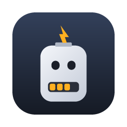

VoltaDockVoltaDock lo publica Diego (DiegoVolta91), desarrollador independiente (“nosotros”). Contacto: issues de GitHub.
Ninguno. VoltaDock no nos envía datos, ni a ningún servidor que operemos. No hay telemetría, ni servicio de reporte de fallos, ni identificador publicitario, ni SDK de terceros.
| Qué | Dónde | Para qué |
|---|---|---|
| Claves de API y tokens que escribes (Anthropic, Stripe, GitHub, Vercel, Resend, Notion, Cal.com, n8n) | Llavero de macOS, o Administrador de credenciales de Windows | Llamar a esos servicios en tu nombre |
| Preferencias (sonido, tiempos, integraciones activas, atajo) | Preferencias de la app en tu Mac, o %APPDATA%\Coucou en Windows* | Recordar tus ajustes |
| Pendientes, recordatorios, hábitos y bloques de enfoque de Hoy | En tu computadora, junto a las preferencias | Mostrártelos a tiempo |
| Archivos que sueltas en la isla | Una copia en la carpeta de la app (en Windows: %LOCALAPPDATA%\Coucou*) | Para que puedas preguntar sobre ellos o adjuntarlos a un correo |
| Eventos de las sesiones de Claude Code (nombre del proyecto, paso actual, solicitudes de permiso) | Solo en memoria | Mostrarlos en la isla |
* En Windows, estas carpetas todavía usan el nombre del proyecto original, Coucou. Pasarán a llamarse VoltaDock en una próxima versión.
Puedes borrar todo en cualquier momento con Ajustes → Mis datos → Borrar mis datos (borra pendientes, recordatorios, hábitos, el chat, las copias de archivos y tus claves; los ajustes se quedan). También puedes quitar tus claves una por una en Ajustes y luego borra la app y su carpeta ~/Library/Application Support/VoltaDock (o el contenedor de la app en la versión de la Mac App Store). En Windows: desinstala VoltaDock desde Configuración → Aplicaciones y borra %APPDATA%\Coucou y %LOCALAPPDATA%\Coucou.
VoltaDock solo habla con los servicios que configuras, directamente desde tu computadora y con tus propias claves. Esos servicios tratan tus datos según sus propias políticas:
No tenemos acceso a esas solicitudes ni a sus respuestas.
La voz de los avisos («Claude terminó»…) usa la voz que ya trae tu sistema, es opcional y no graba ni envía nada.
Si instalas los hooks de Claude Code, Claude Code envía los eventos de sesión a VoltaDock por una conexión local dentro de tu computadora. VoltaDock nunca los saca de tu computadora. Antes de modificar ~/.claude/settings.json, VoltaDock hace una copia fechada y te muestra los cambios.
Cuando esté disponible, el compañero para iPad se conectará directamente a tu computadora por tu red Wi-Fi local, con una conexión cifrada y emparejada por código QR. Estará apagado hasta que tú lo actives y no pasará por ningún servidor nuestro.
Cuando envías un archivo por correo (Mac), el mensaje lo crea y lo envía tu propia app Mail. VoltaDock nunca envía correos por su cuenta.
Según la versión y las funciones que uses, macOS puede pedirte permiso de Automatización (Mail, Terminal), Accesibilidad (para leer el título de la ventana que adjuntas) o Grabación de pantalla (para capturar una ventana que adjuntas). Solo se usan para la función que activaste y puedes retirarlos cuando quieras en Ajustes del Sistema → Privacidad y seguridad. La versión de Windows no pide permisos especiales ni derechos de administrador.
VoltaDock es una herramienta para desarrolladores y no está dirigida a menores.
Como no guardamos datos personales tuyos, no hay nada que consultar, corregir o borrar de nuestro lado. Para los datos que guarda un servicio que conectaste, contacta a ese servicio. También puedes acudir a la autoridad de protección de datos de tu país.
Si esta política cambia, la nueva versión se publicará en esta página con una fecha nueva.
VoltaDock is published by Diego (DiegoVolta91), an individual developer (“we”). Contact: GitHub issues.
None. VoltaDock does not send any data to us or to any server we operate. There is no telemetry, no crash reporting service, no advertising identifier and no third-party SDK.
| What | Where | Why |
|---|---|---|
| API keys and tokens you enter (Anthropic, Stripe, GitHub, Vercel, Resend, Notion, Cal.com, n8n) | macOS Keychain, or Windows Credential Manager | To call these services on your behalf |
| Preferences (sound, delays, active integrations, shortcut) | App preferences on your Mac, or %APPDATA%\Coucou on Windows* | To remember your settings |
| Today's to-dos, reminders, habits and focus blocks | On your computer, next to the preferences | To show them on time |
| Files you drop on the island | A copy in the app's own folder (on Windows: %LOCALAPPDATA%\Coucou*) | So you can ask a question about them or attach them to an email |
| Claude Code session events (project name, current step, permission requests) | In memory only | To show them on the island |
* On Windows these folders still carry the original project's name, Coucou. They will be renamed VoltaDock in an upcoming version.
You can delete all of this at any time with Settings → My data → Delete my data (it removes to-dos, reminders, habits, the chat, copies of files and your keys; settings stay). You can also remove your keys one by one in Settings, then deleting the app and its folder in ~/Library/Application Support/VoltaDock (or the app's container for the Mac App Store version). On Windows: uninstall VoltaDock from Settings → Apps, then delete %APPDATA%\Coucou and %LOCALAPPDATA%\Coucou.
VoltaDock only talks to the services you configure, directly from your computer, using your own keys. Those services process your data under their own privacy policies:
We have no access to these requests or their responses.
The spoken announcements (“Claude is done”…) use the voice your system already has; they are optional and nothing is recorded or sent.
If you install the Claude Code hooks, Claude Code sends session events to VoltaDock through a local connection on your computer. These events never leave your computer through VoltaDock. Before changing ~/.claude/settings.json, VoltaDock makes a dated backup and shows you the changes.
When it ships, the iPad companion will connect straight to your computer over your local Wi-Fi network, through an encrypted connection paired with a QR code. It will stay off until you turn it on and will not go through any server of ours.
When you send a file by email (Mac), the message is created and sent by your own Mail app. VoltaDock never sends email by itself.
Depending on the version and the features you use, macOS may ask you to allow Automation (Mail, Terminal), Accessibility (to read the title of the window you attach) or Screen Recording (to capture a window you attach). These are only used for the feature you triggered and can be revoked at any time in System Settings → Privacy & Security. The Windows version asks for no special permission and no administrator rights.
VoltaDock is a developer tool and is not directed at children.
Since we hold no personal data about you, there is nothing for us to access, correct or delete. For data held by a service you connected, please contact that service. You can also contact the data protection authority of your country.
If this policy changes, the new version will be published on this page with a new date.